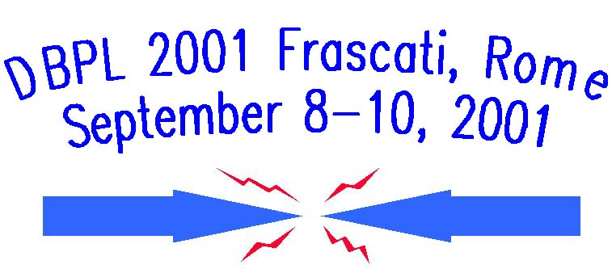
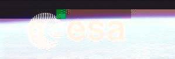
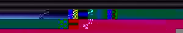
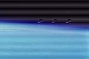

Sponsored by


Sponsored by
The 8th Biennial Workshop on Data Bases and Programming Languages (DBPL '01) to be held in Frascati, Rome, in September 2001, continues the tradition of excellence initiated by its predecessors in Roscoff, Finistere (1987), Salishan, Oregon (1989), Nafplion, Argolida (1991), Manhattan, New York (1993), Gubbio, Umbria (1995), Estes Park, Colorado (1997), and Kinloch Rannoch, Scotland (1999).
Data Bases grew out of a separation between physical and logical data, thus enabling high level query languages. Data Base Query Languages have evolved in expressive power and structural capabilities. Programming Languages have seen a development from assembly languages to high level declarative paradigms. Thus the two areas approach each other as they mature. Earlier successful cross-fertilizations between the fields include the combination of relational theory, type theory and object-oriented languages, resulting in object-oriented data bases, object-relational data bases and persistent programming languages. The combination of databases logic programming and constraint programming produced deductive and constraint databases. Recently, with the emergence of semi-structured data models, there is a renewed synergy between databases and programming languages, in particular in the design of languages to manipulate XML data.
The conference will be held immediately before VLDB'01 in Frascati, a beautiful location on the hills which surround Rome, easily reachable from the city. It will be partially hosted and sponsored by the local establishment of the European Space Agency ESA, the European Space Research Institute, ESRIN. ESRIN main functions in earth observation are: promoting research and applications, co-ordinating the data archives and spatial databases for the more than 30 ground stations that receive satellite data from the Earth observation missions of ESA, as well as those of individual countries, and distributing this data to ESA's partners.
Refereed post-conference proceedings
will be published by Springer Verlag
in their Lecture Notes in Computer Science series. Informal proceedings will
be distributed at the conference.
DBPL 2001 will feature an invited
talk by Tony Bonner (Toronto)
on "Languages for workflows and e-commerce," and an invited tutorial by
Dan
Suciu (Seattle)
on "Type-checking in semi-structured databases," in addition to the technical
program. The Program Co-Chairs are Giorgio Ghelli
(Pisa) and Gosta
Grahne (Montreal).
The Program Committee Members are Catriel Beeri
(Jerusalem), Diego
Calvanese (Rome),
Richard
Connor (Glasgow),
Alon
Levy (Seattle),
Leonid
Libkin (Toronto),
Gianni
Mecca (Potenza),
Frank
Neven (Limburg),
Benjamin
Pierce (Philadelphia),
Chris
Ramming (Menlo
Park), Jerome Simeon (Murray
Hill), Victor Vianu (San
Diego), and Philip Wadler (Basking Ridge).
DBPL '01 solicits theoretical and practical papers in all areas of Data Base Programming Languages.
Submissions should take the form of extended abstracts,
and should not exceed twelve pages (10pt font, single space). Papers should be submitted
electronically, in PDF or PostScript.
SUBMISSIONS ARE CLOSED
Important dates: Submission deadline: May 28, 2001. Notification: July 31, 2001 Camera ready for informal proceedings: August 24, 2001
Conference poster (.doc format, letter)
Conference poster (.doc format, A4)
 |  |  |